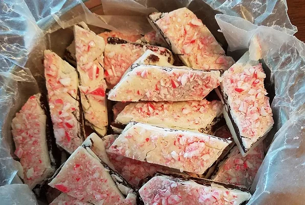

Peppermint Bark

Description
A great peppermint bark recipe, perfect for the holidays!
Ingredients
- 20 ounces white chocolate, coarsely chopped, divided
- 30 peppermint candies, crushed, divided
- 10 ounces dark chocolate, coarsely chopped
- 6 tablespoons heavy cream
- 1 teaspoon peppermint extract
Steps
- Line a 9x12 inch baking pan with aluminum foil or parchment paper.
- Melt half of the white chocolate in the top of a double boiler over just barely simmering water, stirring frequently and scraping down the sides with a rubber spatula to avoid scorching. Spread the white chocolate into the prepared pan. Sprinkle 1/4 of the crushed peppermints evenly over white chocolate. Chill until firm, about 15 minutes.
- Meanwhile, melt the dark chocolate, heavy cream, and peppermint extract together in the top of a double boiler over just barely simmering water, stirring frequently, until just melted. Quickly pour the chocolate layer over the chilled white chocolate layer; spread evenly. Chill until firm, about 20 minutes.
- Meanwhile, melt the remaining white chocolate in the top of a double boiler over just barely simmering water, stirring frequently, until just melted. Spread quickly over the chilled bark. Sprinkle with the remaining peppermint pieces; chill until firm, about 20 minutes. Cut or break into small pieces to serve
Back To Home
Back To Top